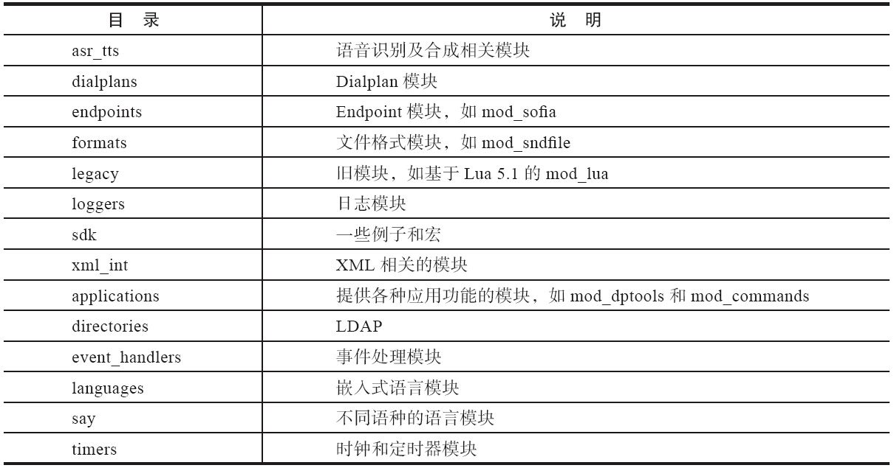

20.2 FreeSWITCH源代码目录结构
FreeSWITCH的源代码目录中，src目录中包含了绝大部分的源代码；libs目录下是一些第三方的库和模块，如libs/sofia-sip就是Nokia的SIP库。
在src目录中，include目录存放了系统大部分的头文件；不同模块的代码则分门别类地放到mod目录中不同的子目录中。系统的核心代码则直接在src目录中。
FreeSWITCH模块的源代码（mod目录）结构与图5-1所示的差不多，如表20-1所示。
表20-1 FreeSWITCH源代码模块目录结构

上面不同的分类也与FreeSWITCH内部模块的抽象大致对应，但也有例外的情况，比较典型的，比如一些模块可能由多个接口（Interface）实现，这样的模块会根据其主要功能放到对应的目录中，有时就直接放到applications目录中，相当于该目录中有一些多功能的模块。但随着时间的推移，某些单功能的模块也可能会被增加一些新的功能和接口（Interface），变成多功能模块。